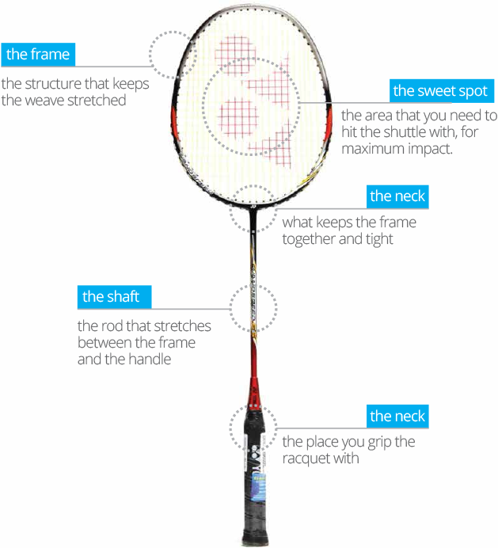

Welcome to Badminton Mania My favorite sport is Badminton
Let's get started
OVERVIEW OF THE GAME
Badminton Court
The badminton court is rectangular and it is divided by a net into two equal rectangles. The standard setting for a court is to be marked for both singles and doubles matches. The doubles court is wider than the singles one, but both are the same length
Brief History
The history of badminton is not fully clear and some parts of it remain a mystery. Badminton appears to be an evolution of a game called battledore and shuttlecock, which origins go way back in time. Badminton, as we know it today, was, according to most sources, invented and developed by the British in the middle of the 19th century.
Racket Info
A racket is one of the few mandatory items in order to play badminton. A racket must follow very strict guidelines to be considered a badminton racket in a professional setting.
Birdie Info
The second mandatory item is the shuttle. This is what distinguishes badminton from all the other racket sports and what makes it so unique. The shuttles used in competitions are called feathered shuttles and they are not cheap to buy, especially because they do not last that long.
HIGHLIGHT
Lee has spent 349 weeks as the No. 1 ranked player in the world (ranked No. 1 for 138 consecutive weeks), the most of any badminton player in history. Lee is the only player to rank No. 1 for more than 300 weeks. He has won 69 BWF titles, ahead of Lin Dan's 66.He is the only player to win 2 different Super Series Premier 6 or more times.
Lin Dan (born 14 October 1983)is a Chinese former professional badminton player.He is a two-time Olympic gold medallist, five-time World champion, two-time World Cup champion, two-time Asian games gold medalist, four-time Asian Champion, as well as a six-time All England champion.Of the 9 major events, he had won at least 2 of each events except the Year-end Finals where he won once in his only time participating in that event.
Kento Momota (桃田 賢斗, Momota Kento, born 1 September 1994) is a former Japanese badminton player.[1] He has won several major badminton tournaments including two World Championships titles, two Asian Championships titles, and one All England title. Momota has received a Guinness World Records certificate for "The most badminton men's singles titles in a season", for his achievements by winning 11 titles in the 2019 season.[2] He is considered to be one of the greats of badminton.
How to get started?!
-
Basic Strokes
- Grip: Learn the basic grips: forehand and backhand. Ensure you are holding the racket correctly to maximize control and power.
- Serve: Start with the basic low serve to keep the shuttle low over the net. Progress to high serves and flick serves as you get more comfortable.
- Clear: Use an underhand clear to hit the shuttle high and deep into the opponent's court.
- Drop Shot: Practice drop shots to make your opponent move quickly to the front of the court.
- Smash: Learn the basic smash technique for a powerful downward shot.
-
Footwork
- Basic Footwork: Practice moving quickly and efficiently around the court. Work on side steps, front-back movements, and diagonal movements.
- Split Step: Use the split step to prepare for your opponent's shot. This involves a small jump to stay light on your feet and ready to move in any direction.
- Ready Stance: Always maintain a ready stance with knees slightly bent and racket up. This will help you react quickly to shots.
- Base Position: Return to the center of the court (base position) after each shot to prepare for the next one.
-
Strategy
- Shot Placement: Focus on placing your shots accurately rather than just hitting hard. Aim for the corners and lines to make your opponent move.
- Deception: Use body language and racket movements to deceive your opponent, making them anticipate a different shot.
- Consistent Play: Aim for consistency rather than trying for difficult shots. Keep the shuttle in play and wait for your opponent to make mistakes.
-
Conditioning
- Warm-Up: Always warm up before playing to prevent injuries. This includes stretching and light jogging.
- Endurance: Work on your stamina and cardiovascular fitness to maintain a high level of play throughout the match.